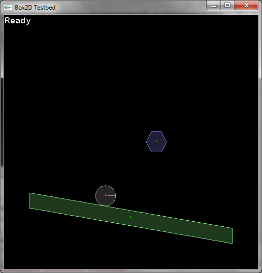
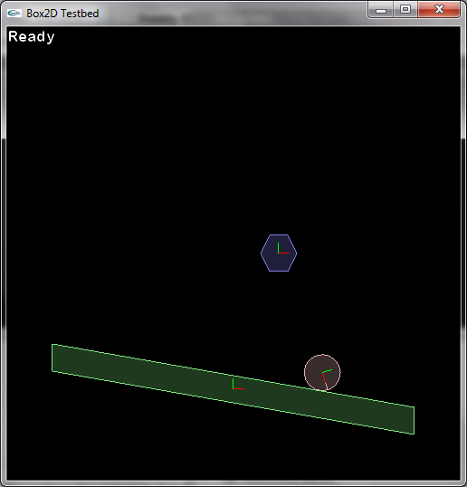
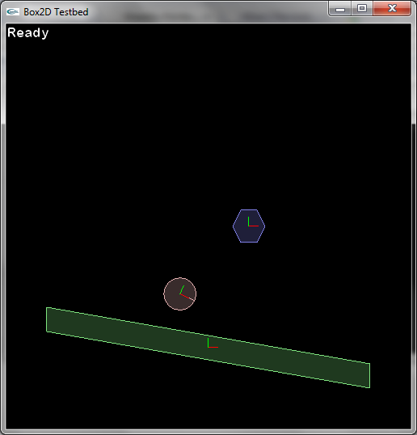

Density, Friction And Restitution
This second Box2D for Moai tutorial will go into a bit more depth on bodies and fixtures, explaining some of the properties that you can change in order to alter the way your physics objects behave. Once you've loaded up your main.lua file from the previous tutorial in your favorite text editor, it's time to make some changes. You're going to want to put a slant on your static body's fixture in order to observe what happens to objects on a slanted surface. First, find this line and use double dashes to comment it out (or just delete it):
rectFixture = staticBody:addRect( -200, -15, 200, 15 )
and now for some new code:
----------------------------------------------------------------
--density, friction, restitution
----------------------------------------------------------------
slantPoly =
{
-200, 50,
-200, 20,
200, -50,
200, -20
}
slantFixture = staticBody:addPolygon( slantPoly )
This replaces the rectangular fixture that was connected to your static body with a new custom polygon that has a bit of a slant to it.

One thing to notice right away is that when your dynamic ball hits the static slanted platform, it just stops there in a very unsatisfying way. This is happening because several properties related to the ball have not been set and are still at their default values. Time to add some life to this physics object.
Density
Add the following code:
circleFixture:setDensity( 1 )
dynamicBody:resetMassData()
That second line is an easy one to forget, and a good thing to look for if your bodies aren't moving like they should. Since fixtures, not bodies, are the objects that hold density, a body won't necessarily know that a value associated with one of its fixtures has changed. Calling resetMassData basically tells the body "have a look at all the fixtures attached to you, see if anything has changed that would affect how heavy you are, and recalculate your mass based on those changes". Run the program, and you should see the dynamic body roll nicely down the inclined plane.

A density value of 1 is good enough for now, and should suffice for most of the examples in this tutorial series. You will want experiment with density when/if you have a game programming problem like getting a wooden ball and an iron ball to react properly when colliding. At this point tweaking the density value is not going to have much visible effect.
Friction
Friction represents how easy or difficult it is for two solid objects to slide past one another. Two pieces of waxed paper, for instance, would have very little friction against one another, compared with two pieces of sandpaper. Try altering your dynamic body's friction with the following line (no need to reset mass data for this):
circleFixture:setFriction( 0 )
Run this and you should see the ball slide down the plane like an ice cube on a frying pan, without turning at all. Friction values are set between 0 and 1, with one being the default. Be sure to comment out or delete this line when you're done experimenting with it, as frictionless objects will make later sections of this tutorial series behave oddly.
Restitution
Restitution is simply a measure of how bouncy an object is. Setting it does not require a call to resetMassData. Try adding this line and then running:
circleFixture:setRestitution( 0.5 )

As you can see, the ball now has some bounce to it. Restitution is set between 0 (totally inelastic) and 1(perfectly elastic). All three of these settings can be tweaked independently and won't interact much - a very dense ball and a less dense ball will both bounce the same amount, if their restitution is the same.
Experiment a bit until you're comfortable with what these properties do, then move on to the next tutorial.